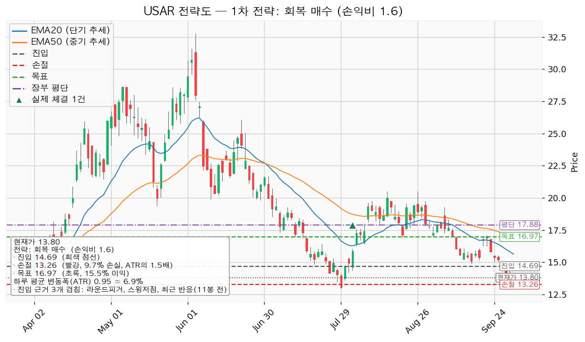
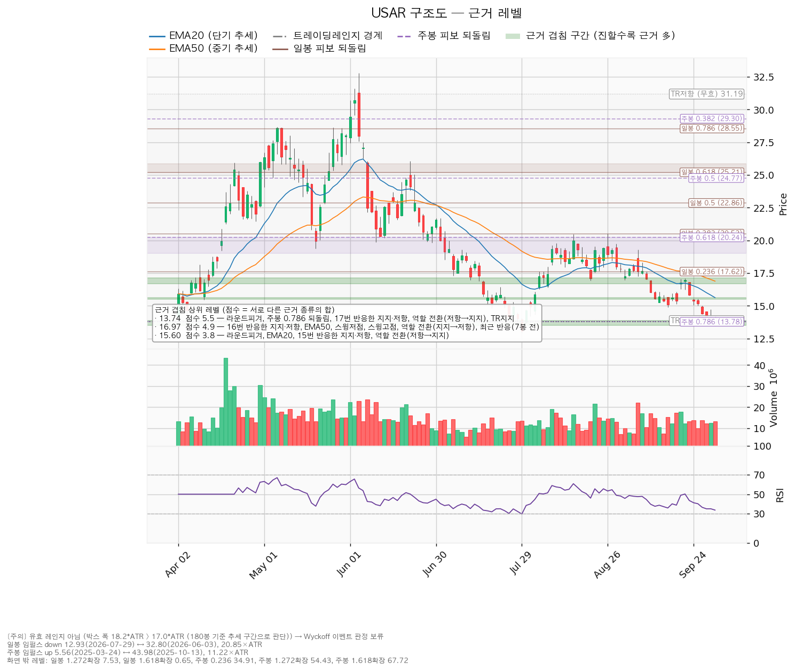
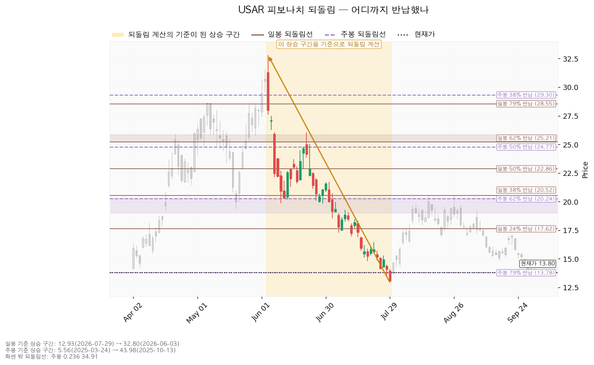
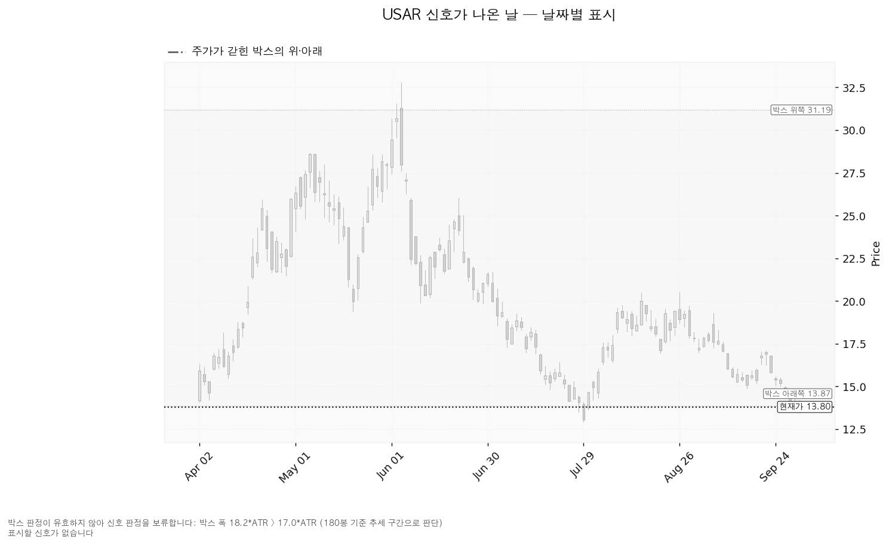

USA Rare Earth(USAR)는 미국 내에서 희토류 자석과 그 원료를 만드는 회사로, 텍사스 라운드톱 광산 개발과 오클라호마 자석 공장을 함께 추진하고 있습니다.
기준 종가는 2026-10-01의 13.80달러입니다. S&P 500 7,666이 200일 이동평균 7,221 위(+6.16%, 2026-04-08부터)라 신규 진입이 가능한 국면입니다.
| 구분 | 가격 | 판정 방식 | 현재 상태 | 현재가 대비 |
|---|---|---|---|---|
| 회복선 (진입 조건) | 14.69달러 | 일봉 종가 회복 후 되돌림 지지 | 회복 대기 | +6.45% (0.93 ATR) |
| 집행 손절 | 13.26달러 | 닿으면 매도 — 14.69달러 진입이 성립한 경우에만 유효, 미진입 시 의미 없음 | 미진입 | -3.91% |
| 관망 종료 기준 | 13.50달러 또는 2026-11-06 실적 | 일봉 종가 이탈 시 매수 계획 종료 — 새 리포트 대기 (파는 선 아님) | 유지 중 | -2.17% |
| 확인선 (상승 확정) | 16.97달러 | 일봉 종가 돌파 후 되돌림 지지 | 미돌파 | +22.97% |
| 폐기선 (구조) | 14.69달러 | 이탈 후 3거래일 내 종가 회복 실패(또는 13.74 아래 종가) + 반등에서 저항 확인 — 박스가 무효라 회복선과 같은 참고용 구조선이며 박스 상단 31.19는 맥락으로만 둡니다 | 2단계 경고 | +6.45% (위쪽, 0.93 ATR) |
| 항목 | 회복 매수 |
|---|---|
| 엣지 | 모멘텀 (회복 확인형, 가중치 1.0) — 저항을 종가로 되찾으면 그 방향이 이어진다는 전제. 자주 틀리고 소수가 크게 맞는 유형(일반적 성격이며 측정값 아님) |
| 진입 | 14.69달러 일봉 종가 — 근거 3개: 라운드피겨 14.5, 스윙저점 14.88(9/16), 11봉 전 반응 (14.50~14.88) |
| 집행 손절 | 13.26달러 (-9.72%) — 라운드피겨 13.5·주봉 79% 되돌림·17번 반응한 지지·저항·역할 전환(저항→지지)·박스 지지가 겹친 13.50~13.87 바로 아래 |
| 목표 | 16.97달러 (+15.52%) — 16번 반응한 지지·저항, EMA50, 스윙저점, 스윙고점 17.10(9/22), 역할 전환(지지→저항), 7봉 전 반응 |
| 손익비 | 1:1.60 (손절 1.50 ATR) · 구조적 손절 기준도 1:1.60 |

손절이 이미 지지 구간 아래의 구조 손절이라 두 손익비가 같습니다. 셋업이 하나뿐이라 손익비 × 회복 확인형 × 진입 근거 겹침으로 대표가 됐고, 상대강도·거래량 배수 0.8배(지수 대비 20일 초과수익 -22.69%, 상대강도선 20일 기울기 -22.69%, 돌파 구간 거래량 최대 1.01배)는 순서를 바꾸지 않았습니다. 16.97달러에서 전량 매도 (목표 도달)이며, 15.02달러에서 절반을 나누면 전 구간 손익비가 1:0.92, 최악 1:0.12로 내려가 단일 청산으로 둡니다. 16.97달러는 확인선이기도 해서 막히면 거기서 전량 매도이고, 종가로 넘고 되돌림이 지켜지면 새 셋업으로 다시 산출합니다. 현재가가 진입선 아래라 추격 대상이 아니며, 진입가는 장부 평단 17.8847달러보다 아래입니다 — 보유분을 먼저 전량 매도하고 조건이 맞을 때 새로 들어가는 계획입니다.
① 관찰 — 일봉 종가 14.69 아래 마감(2026-09-28 발생, 종가 14.415). 속임수 하락일 수 있어 무효가 아니며 신규 진입만 멈춥니다. ② 경고 — 이탈 후 3거래일 안에 14.69를 종가로 회복하지 못함, 또는 그 전에 일봉 종가가 13.74 아래로 마감(하루 평균 변동폭의 1배만큼 더 밀림) — 둘 중 먼저 오는 쪽. 9/29~10/1 종가가 모두 14.69 아래(9/30 장중 14.75는 종가 14.08)라 현재 이 단계입니다. ③ 무효 — 반등이 14.69에서 막히고 되밀림(지지가 저항으로 전환) → 셋업 폐기.
집행 손절 13.26달러는 단계와 무관하게 별도로 작동하며, 장중 일시 이탈은 어느 단계에도 해당하지 않습니다. 폐기선이 현재가에서 0.93 ATR이라 가격 무효화가 실무에서 작동하므로 별도 논지 무효화는 세우지 않습니다.
| 가격대 | 겹친 근거 | 위치 |
|---|---|---|
| 16.68~17.12 | 16번 반응한 지지·저항, EMA50, 스윙저점, 스윙고점, 역할 전환(지지→저항), 7봉 전 반응 | 위 — 목표·확인선 |
| 15.50~15.64 | 라운드피겨 15.5, EMA20, 15번 반응한 지지·저항, 역할 전환(저항→지지) | 위 |
| 15.00~15.03 | 라운드피겨 15, 16번 반응한 지지·저항, 역할 전환(저항→지지), 11봉 전 반응 | 위 — 직전 회복선 자리 |
| 14.50~14.88 | 라운드피겨 14.5, 스윙저점, 11봉 전 반응 | 위 — 회복선 |
| 13.50~13.87 | 라운드피겨 13.5, 주봉 79% 되돌림, 17번 반응한 지지·저항, 역할 전환(저항→지지), 박스 지지 | 현재가 위치 — 관망 종료 기준 |
| 12.50~12.93 | 라운드피겨 12.5, 스윙저점(7/29) | 아래 |
조회 일봉 753봉 중 40·90·180봉을 시험했고, 가격이 가장 잘 머문 180봉(13.87~31.19달러, 머문 비율 0.989)도 폭이 하루 변동폭의 18.17배로 유효 한도(17배)를 넘어 추세 구간으로 판정돼 Wyckoff 판정 보류입니다. 박스 안쪽 관측치는 중립입니다 — 지지 테스트 6회(최근 2026-10-01 저가 13.472, 거래량 평균의 0.98배)의 거래량은 혼조, 상승봉 대 하락봉 거래량비 0.98, 우호적인 것은 저점 절상 하나입니다. 직전 180봉(8.42~27.58달러)과 가격대가 겹쳐 같은 횡보의 연장입니다.

되돌림: 일봉은 32.80(2026-06-03) → 12.93달러(2026-07-29) 하락분 기준 24% 17.62 / 38% 20.52 / 50% 22.87, 주봉은 5.56(2025-03-24) → 43.98달러(2025-10-13) 상승분 기준 62% 20.24 / 79% 13.78입니다. 현재가 13.80달러는 주봉 79% 반납선 13.78달러 바로 위입니다.

신호일: 박스가 무효라 속임수 하락·강세 신호 같은 날짜별 판정이 산출되지 않았습니다(신호가 없었다는 뜻이 아니라 보류). 국면 후보는 이동평균 추세만 반영한 하락 진행입니다.

| 날짜 | 이벤트 | 볼 것 |
|---|---|---|
| 다음 반등 시 | 14.69 종가 회복 여부 | 회복하면 진입, 막히고 되밀리면 폐기(3단계) |
| 2026-11-06 | 분기 실적 | 당해 주당순이익(컨센서스 -0.57, 최저 -0.78), 영업현금흐름(직전 -4,899만 달러), 설비투자 속도, 자금 조달 계획 (그 이후 구간은 확인할 자료 없음) |
1회 손실 한도는 계좌 139,498,400원의 1%(1,394,984원)이고, 손절 폭 9.72%로 역산한 비중은 계좌의 10.3%(14,368,335원)로 13% 상한 안입니다. 하루 평균 변동폭은 주가의 6.91%로 8% 아래이고 손절 폭은 그 1.50배라 하루 등락만으로 체결될 자리가 아니며, 진입~목표는 2.39 ATR입니다. 판정: 대기. 14.69달러 일봉 종가 회복 시 진입, 손익비 1:1.60(손절 1.50 ATR). 조건 점검 2/9, 미달은 20일선 위·이동평균 정배열·200일선 위·52주 고점 대비·지수 대비 20일 초과수익·상대강도선 신고가·거래량 강도입니다. 보유 30주는 13.80달러에서 전량 매도 (손절)입니다.
ATR = 하루 평균 변동폭. EMA20·EMA50 = 최근 20일·50일 흐름을 나타내는 평균선. 되돌림(피보나치) = 직전 상승·하락분의 몇 %를 반납했는지로 보는 가격대. 속임수 하락(spring) = 지지선을 잠깐 뚫고 곧바로 되돌아오는 움직임. PER = 주가 ÷ 주당순이익. 본 자료는 정보 제공 목적이며 투자 권유가 아닙니다.